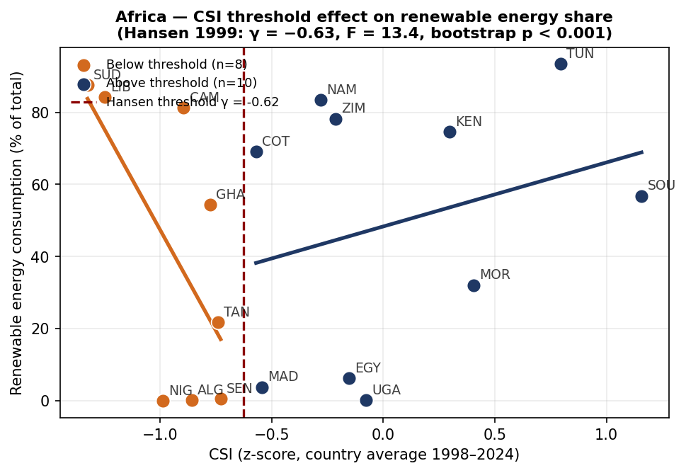

From measurement to policy
What a quarter-century of consumption-sovereignty data says — and what it implies for industrialisation strategy in the Global South. Always as diagnosis, never as protectionist prescription.
1 — Consumption sovereignty is a structural, slow-moving property. Around 92% of the CSI's variation is between countries; only 8% is within-country movement over 25 years. Sovereignty is built over decades, by industrial structure — it does not fluctuate with the business cycle.
2 — It is not wealth. The correlation with GDP per capita on the analysis panel is +0.02. Türkiye, Mexico, Thailand and Malaysia outrank Japan and the United States. What the index tracks is whether capability is used to supply the home consumer — a choice of economic structure, not a level of income.
3 — It is complexity's consumption-side twin. Correlations of +0.74 with export diversity and +0.71 with the ECI — but only about half the variance is shared. The other half is the consumption-side information the ECI cannot see.
4 — Food dependence is the strongest single drag. Across 5,158 country-years, the food-and-agriculture import share correlates at −0.55 with the CSI — the largest negative in the correlation structure. For many low-CSI economies the sovereignty gap begins on the plate.
5 — Africa's gap is persistent but not uniform. The African mean sits ~1.5 SD below Europe & Central Asia and the gap has not closed since 1995. But South Africa ranks in the global top 25, and Tunisia, Morocco, Kenya and Mauritius sit near or above the world mean — within-continent variation policy can learn from.
6 — The gap products are specific, and actionable. The index names each country's gap list. Nigeria's: sugar, frozen fish, women's clothing, footwear, motorcycles — and palm oil, a product Nigeria once led the world in exporting. Pharmaceuticals appear only at low weight: the index correctly excuses genuinely complex goods.
7 — Status premia are real but narrow. Unit-value data show poor countries generally buy the cheap foreign variety — premium-paying tracks income. The xenocentrism signal survives in culture-specific categories: Nigeria pays +56% above the world price for wigs and human hair while paying −81% below for pharmaceuticals.
Case study
Nigeria scores −0.99 on the CSI (analysis panel) — 18th percentile globally. The product diagnostics turn that abstract score into a concrete list of goods bought abroad despite demonstrated domestic capability, led by processed food and light manufactures.
The unit-value evidence adds the second layer: across nearly every chapter Nigeria imports the cheap variety — used vehicles (−30% vs world price), generic pharmaceuticals (−81%), refurbished electronics (−58%). The exception is precisely the cultural-status category the xenocentrism literature predicts: wigs and human hair, +56% above the world price.
The policy reading: Nigeria's sovereignty gap is mostly an industrialisation and quality problem (close it by making the goods, competitively), with a narrow value-system component concentrated in status categories (close it with brands, quality signalling and demand-side campaigns — not tariffs).
Import-weighted unit-value premium on consumption goods. Positive = pays above world average.
Source: CSI-Preference (BACI HS6 unit values) · working paper
Regime thresholds (Hansen 1999) — African renewables share responds strongly above a CSI threshold

Green industrialisation
At ERSA 2026 the lab showed that on the 18-country African subsample the CSI is statistically associated with all three green-growth outcomes — CO₂ intensity, renewables share, GHG per capita — while ECI-TECHNOLOGY and ECI-RESEARCH largely fall silent. Production-side complexity is necessary but not sufficient; for African economies the usable green-growth variation sits in consumption patterns.
The threshold results sharpen this into a policy rule of thumb: green-growth responsiveness switches on at moderate sovereignty levels. Economies below the threshold see little return; crossing it — building the domestic supply of the consumer basket — appears to be a precondition for the renewables transition to bite.
The causal supplement publishes the System GMM null results alongside: within-country identification is weak because the CSI barely moves within countries. We state this plainly rather than overselling.
The econometrics →The policy frame
1. Target the gap list, not "imports". Each country's product diagnostics name the consumer goods it buys abroad despite demonstrated capability. That list is the industrial-policy shortlist: quality upgrading, standards, financing and value-chain investment aimed at specific products — palm oil and processed food before microchips.
2. Fix food first. Food-import dependence is the strongest single correlate of low sovereignty. Agro-processing — turning domestic primary production into the processed consumer goods households actually buy — is the highest-leverage rung of the ladder for most low-CSI economies.
3. Treat the value system as policy terrain. Status premia are narrow but real. Domestic brand-building, quality signalling, and demand-side campaigns address the α that tariffs cannot touch — keeping income, and jobs, at home because consumers choose to.
4. Sequence green strategy through sovereignty. The threshold evidence suggests green-growth policy bites only above a moderate sovereignty level. For economies below it, building domestic consumer-goods supply is not a rival of the green agenda — it appears to be its precondition.
The CSI measures a gap, and a gap can be closed by raising domestic quality and shifting consumer value systems just as much as by any trade measure. The consumer stays sovereign throughout.